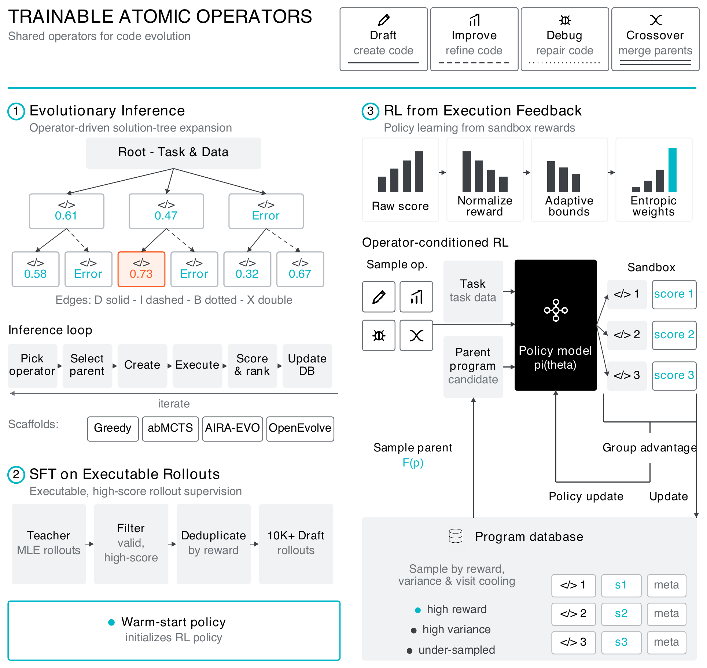

01研究背景与问题定义
机器学习工程需要把数据处理、建模、调试和评估连成可执行过程。模型能写出合理代码，并不等于能在算力限制下提交有效预测，更不等于能从一次失败中改善下一次搜索。若训练监督只是完整成功轨迹，反馈既稀疏又绑定某个控制器；若只增加搜索轮数，局部代码改进能力又可能成为瓶颈。
OpenMLE 将问题分成三个相互配合的层次：环境提供可信的程序执行结果，模型学习可复用的局部程序变换，搜索器把这些变换组织成长程探索。Frontis-MA1 是该体系训练出的工程代理。这里的“递归自改进”首先是研究目标；实验证明的是工程程序改进和相应搜索能力，尚不是模型自行重写整个学习系统的闭环证据。
| 层次 | 具体缺口 | 持续保留的产物 |
|---|---|---|
| OpenMLE-Gym | 异质任务缺少统一、可验证交互接口 | 标准任务包与隔离评估结果 |
| OpenMLE-ERL | 写初稿、改进、修复、交叉缺少一致监督 | 可被不同控制器调用的模型参数 |
| OpenMLE-Evo | 只按当前分数选父代，容易忽略经验和新方向 | 候选谱系、经验卡和全局经验板 |
02方法与技术路线
体系以程序候选为共同接口：训练学习一次可执行变换，推理把变换反复组合；执行反馈同时连接二者，但模型后训练和推理时搜索并不是同一个更新过程。
可验证任务环境
公开数据与任务描述供代理使用；隐藏答案与 metric 保持隔离。运行返回分数、错误、日志和资源信息。
执行驱动的算子学习
Draft / Improve / Debug / Crossover 的候选实际执行；SFT 学有效变换，RL 以任务分数校准。
选父代
同时考虑当前质量、相对父代进步和方法新颖性。
构建算子上下文
按 Improve / Debug / Crossover 检索相关谱系和错误经验；需要时才生成摘要。
执行新候选
程序进入隔离沙箱；得分和错误写回经验，而非只保留最优代码。
统一执行契约：先区分程序无效与方案不够好
任务包把公开输入、隐藏答案和评估逻辑分离。沙箱不仅返回一个分数，也区分运行错误、缺失代码、缺失提交、评分失败和超时。这样 Debug 可处理执行失败，Improve 才针对已经能运行却分数不佳的程序，避免把两种状态混进同一种负奖励。
任务构造还分开检查可执行性与语义质量：能运行的指标程序不保证任务目标有意义。语义筛查用于排除数据不足、泄漏或可被简单规则投机解决的任务。5,758 个任务中，只有 1,415 个完整任务包可发布，其余主要发布准备和指标脚本，复现者仍需处理源数据授权。
训练程序变换，而不是背诵整条搜索轨迹
四类算子具有不同输入：Draft 从任务开始，Improve 读取可运行父程序，Debug 读取失败程序与错误，Crossover 合并两个父程序的信息。SFT 例子经过执行筛选；修复链中有用的步骤可以被回溯保留，而不是只学习最终成功代码。
RL 的关键困难是不同工程任务的分数不可直接比较。论文先统一优化方向，再按任务历史前沿调整奖励范围，让当前模型实际能到达的分数差异保留训练信号。随后对高质量尾部增强优势；这优化的是局部变换能力，并不直接教会模型何时扩展哪一个整局搜索分支。
搜索经验怎样真正进入下一次决策
父代抽样把分数、谱系进步和方法族新颖性加权后转成概率，保留随机探索而非只反复扩展最高分程序。确定性经验卡提供可核查的信号，语言摘要负责解释，但摘要不取代分数与谱系。
上下文随操作变化：Improve 对照近期祖先与同父兄弟，Crossover 分别提供两侧谱系并提示互补性，Debug 优先寻找同类错误。丰富摘要延迟到某个候选实际被选中后才合成并缓存，避免为所有永远不会复用的节点付费。这个设计把“存下所有结果”与“为当前决定生成说明”分开，是系统效率的实质来源。
论文原始结构图 · 点击对照

03实验设计与结果分析
训练与搜索是否各有独立增益
| 模型 / 搜索 | Medal Average | 执行预算 |
|---|---|---|
| Qwen3.6-35B-A3B / OpenMLE-Evo | 39.39% | 每题 12 小时；单 RTX 4090，12 GB 上限 |
| Frontis-MA1-35B / OpenMLE-Evo | 60.61% | 相同主评测执行预算 |
| Frontis-MA1-35B / OpenMLE-Evo-Max | 71.21% | 总沙箱计算量保持一致；额外经验先验与异步搜索 |
固定搜索器后，后训练带来 21.22 个百分点的提升，说明收益不能全部归给更强的控制器。Max 再提高 10.60 个百分点，但它同时改变跨任务先验与异步调度，应看作增强系统配置的增益，不能把整段差值只归因于某一个模块。
预算对齐的是沙箱执行资源，不是所有模型推理、历史训练和经验蒸馏成本。Medal Average 也不是平均准确率，而是达到任一奖牌门槛的任务比例。
离开比赛题之后，闭环还能转移吗
| 固定因素 | 替换前 | 替换后 |
|---|---|---|
| 固定 OpenMLE-Evo，替换为训练模型 | 50% | 70% |
| 固定 Qwen 底座，替换 AIRA-Evo 为 OpenMLE-Evo | 20% | 50% |
两条控制分别支持模型技能与搜索系统有可迁移价值。样本为 10 个任务，单题就影响 10 个百分点，因此更适合作为跨基准可行性证据，而不是精确估计广泛科研任务上的平均收益。
04贡献、局限与综合评价
值得保留的是统一的可执行算子接口
环境、模型和搜索器通常分别研究；本文让它们围绕同一组程序变换对接。模型学习可检验的局部能力，搜索器负责探索组织，经验系统解释执行结果。这种职责分解比“更强代码模型加更多重试”更明确，也使两种增益能够通过替换实验区分。
搜索效用中的“新颖性”是工程代理信号
父代选择把质量、进步和方法族新颖性并列，能防止只扩展最高分节点；但方法族标签只是探索价值的代理，未必代表真正不同的算法结构。若表面改名或代码风格变化改变族别，搜索就可能为低价值新颖性付费。相应地，节点经验的确定性提取比自由摘要更可审计，却不保证分类本身语义正确。可以在固定候选池上打乱族标签，比较后续前沿与有效程序比例，判断收益来自真实互补探索还是一般随机扩展。
经验闭环距离递归自改进还有一层
目前代理主要优化任务程序，训练和评估协议仍由研究者确定。程序成功不自动意味着它能稳定改进自己的奖励、训练数据和搜索算法。标题中的 RSI 方向因此应理解为可执行试验平台，而非已完成无限递归自提升。
另一个关键条件是隐藏评估能否抵抗重复试探。搜索依赖验证分数，历史前沿奖励也鼓励细小提高；当验证集较小，长期优化可能同时积累真实性能与指标适配。决定性验证应保持训练算子和搜索预算不变，增加新的隐藏数据重评，并追踪候选前沿是否仍然单调改善。现有结果证明这套分工有实用价值，对“自我改进过程本身的持续提升”仍需单独测量。